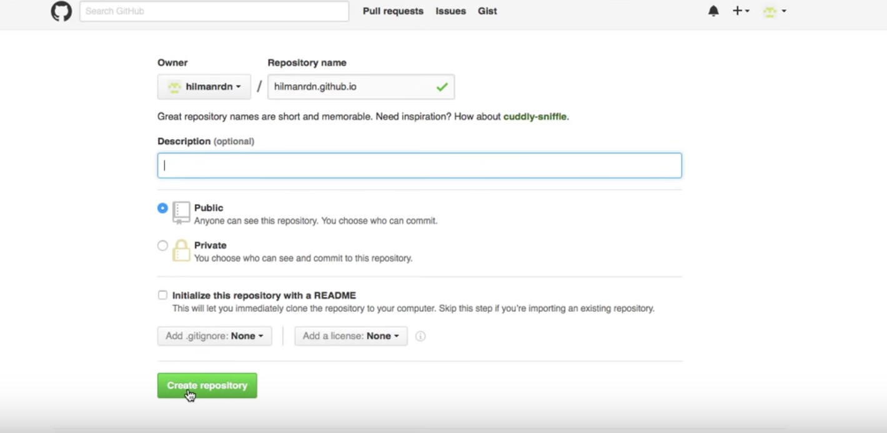
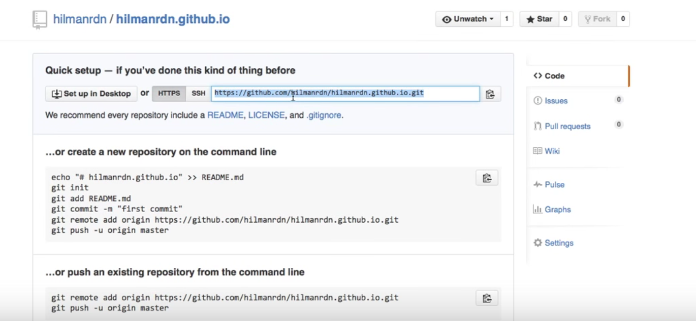

Cara Hosting Gratis Dengan Github Pages
Hosting website adalah cara agar website yang kita buat, bisa diakses oleh semua orang dari ujung dunia maupun Isekai. Github, platform yang dicintai para programmer sebagai tempat berkolaborasi ataupun menyimpan kode mereka juga menawarkan solusi hosting, dan yang lebih menarik tidak dikenakan biaya alias gratis. Batasannya sendiri hanya halaman statis yang bisa ditampilkan alias HTML, CSS dan Javascript.
Sebelum membuat Github Pages, pastikan teman-teman sudah mempunyai akun github. Kalau semisal belum punya, kalian bisa daftar terlebih dahulu.
Langkah-langkah1. Membuat Repository
Bikin satu repository baru dengan nama username.github.io, dan berikan deskripsi jika perlu
2. Clone repo
Setelah membuat repositorinya, kita bisa mengclone/menyalin dengan link https/ssh yang sudah tersedia tentunya. Untuk clone sendiri, kita bisa menggunakan bantuan command line atau aplikasi desktop github yang sudah ada https://desktop.github.com/
3. Membuat Templete
Setelah menyalin repo nya ke desktop , kita bisa langsung mulai berkarya, silahkan buat file index.html di dalam folder yang baru saja kita clone dan isi sesuai yang teman-teman ingin tampilkan ke seluruh dunia
4. Push repo
Dan tentunya tugas terakhir kita adalah kembali push atau mengupload kode yang sudah kita buat ke repo originalnya. Sehingga github pages sudah bisa dibuka.